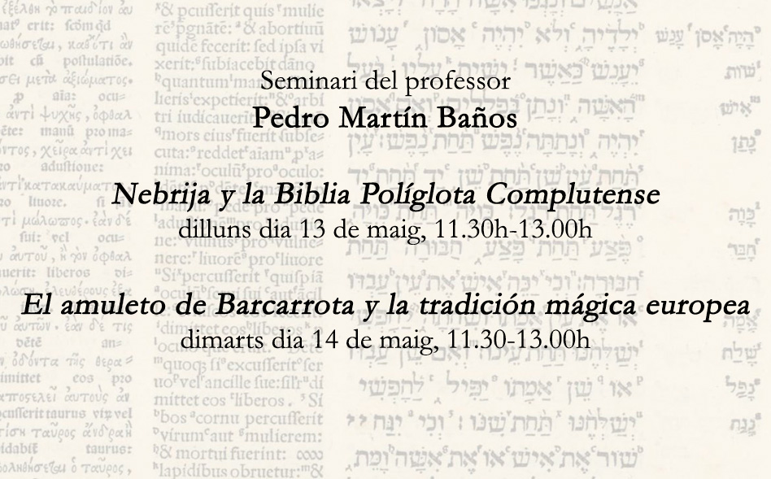

«El amuleto de Barcarrota y la tradición mágica europea»
El día 14 de mayo de 2024, a las 11:30h, se celebrará el seminario de Pedro Martín «El amuleto de Barcarrota y la tradición mágica europea» en la Sala de Graus de la Facultad de Filosofía y Letras de la UAB.
← Volver a todas las noticias